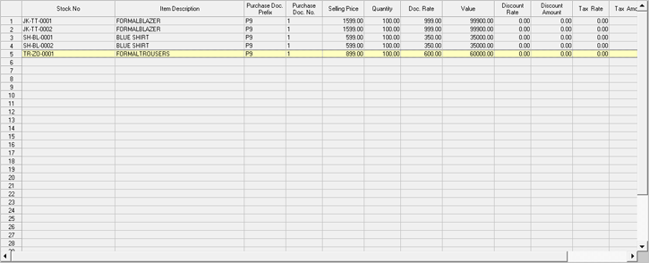
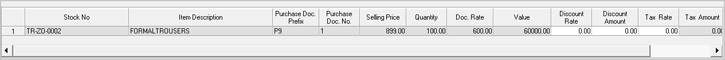

The detail part of an outward transaction/ issue is displayed. The columns displayed in the grid are based on the transaction type selected.

Each item with its required details for issue can be entered in the Item Details grid from the Direct Entry grid. The columns displayed in the grids can be configured here.
The Direct Entry grid is displayed.

The grid displays the item details, if selected. Otherwise, you may scan the stock number, enter the stock number, or press F2 in the Stock No. column to select items using the search window.
If the selected transaction type is purchase return, and the reference documents are selected, items are validated against the documents. Otherwise, a list of documents are displayed for selection as soon as an item number is entered. Select the required documents. In order to do a transaction without reference, press Esc.
Note:
• When Dispatch Advice or Purchase document is loaded, the selected document prefix and document numbers are displayed in the grid.
• When PDT file is loaded, if sufficient quantity is not available, Shoper gives a warning message and the stock number is skipped after writing to a log file.
• In the cases of: inward to outward, item details for purchase return loaded from multiple purchase documents, and dispatch advice loading, stock numbers having insufficient quantity are shown in different colours. If available quantity is less, you can change the quantity as per availability, and remove items with zero quantity.
Stock No: Enter the stock number of the item or press F2 to activate Item Search window and select the required item. If the stock number of the item is entered by scanning the barcode, then the scanning of the barcode is to be done when the cursor is in this field.
Item Description: Displays the description of the selected item/ stock number.
Purchase Doc Prefix: Displays the prefix of the purchase document.
Purchase Doc No.: Displays the number of the purchase document.
Note: In case Enable Delivery from Remote Location is set to 1-Yes in System Parameter,under category Delivery Process, then an additional column Location will be available in the grid. When location as part of batch is enabled, Location Code field will be displayed.
Selling Price: Displays the values available in the items master for the field. If the transaction type is Purchase then, Purchase Price is displayed instead of Current Cost. A drop-down list is displayed (based on parameter settings). Select the price from the list.
Quantity: Enter the item quantity being transacted. This is validated against the quantity in the reference document. If LSQ is enabled, it is taken as the transaction quantity. For returning more quantity, you need to scan different pieces individually. When duplicate items are entered, if all details in the lines match, duplicate entries are clubbed and quantity and values are computed.
Note:
• Even if LSQ is enabled, when loading details from PDT file, the quantities in the PDT file are loaded.
• Quantities that are not multiples of the corresponding LSQ is allowed based on configuration at the time of installation.
Validation of transaction quantity against stock on hand is done based on configuration.
Doc Rate: The rate of the item entered in the document when the item was received during Goods Inwards.
Value: Calculates and displays the product of the Act Qty and Purchase Cost.
Discount Rate and Discount Amount: Enter the items level discounts, if any, as an Amount or Rate to be applied on Value. If rate is entered then the amount is automatically calculated and displayed and vice versa.
The percentage of discount applicable is as per the selected discount code/ scheme, subjected to the maximum allowed (if defined). If the item level discount selected is a fixed one you cannot edit it. On the other hand, in the case of a variable discount, if it is defined as:
Percentage: You may change the percentage of discount for the selected item
Amount: The computed percentage based on the discount amount is displayed
The discount amount applicable is as per the selected discount code/ scheme, subjected to the maximum allowed (if defined). If the item level discount selected is a fixed one you cannot edit it. On the other hand, in the case of a variable discount, if it is defined as:
Amount: You may change the amount of discount for the selected item
Percentage: The computed amount based on the discount percentage is displayed
Additionally, if you have defined the variable discount as Both, you may enter either percentage or amount. If you enter percentage, the corresponding amount will be displayed and vice versa.
Note: In the case of manual selection of discount as well as auto selection of discount, changing variable discount percentage/ amount at item level are similar.
Tax Rate and Tax Amount: Enter Item level tax either as Tax Rate or Tax Amount.
Addon Before Tax: Enter any additional value to be added to the cost before calculating the Tax. Tax is also calculated for this value.
Addon After Tax: Enter any additional value to be added to the cost. Tax is not calculated on this value.
Deduction Before Tax: Enter any value to be subtracted from the cost. Tax is calculated on this value also and reduced from the Tax Amount.
Deduction After Tax: Enter any value to be subtracted from the cost. Tax is not calculated on this value.
Net Amount: Displays the total amount arrived by adding or subtracting, as the case may be, the values of Discount, Tax, Add-On and Deductions.
Note: By double clicking on any of the items present in the Item Details grid, the item is brought to the Direct Entry grid where it can be edited as required. To delete any item from the Item details grid, you have to select the item by clicking and then press Ctrl+D when it is high lighted.